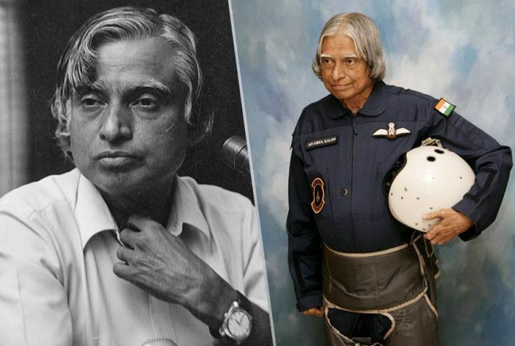

Abdul Kalam DRDO

In June 1982, Dr Kalam shouldered the responsibility of shaping the missile development programme. His moment of reckoning in DRDO came with the successful completition of the IGMDP. The success of the missile programme demonstrated his concept of management by partnership and the sobriquet 'the Missile Man of India'.